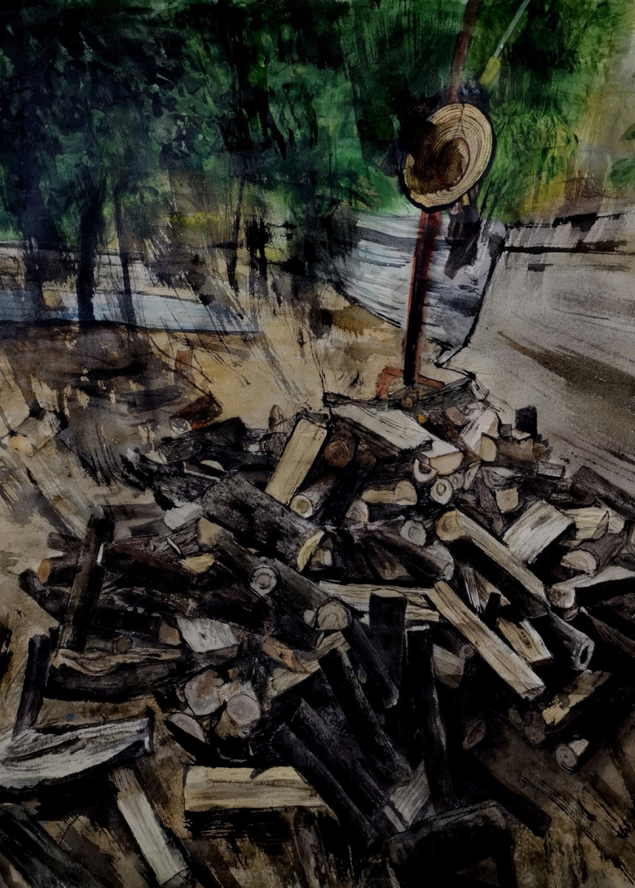

The Straw Hat on the Woodpile
木堆上的草帽

- Artwork ID / 作品编号
- KW-W-000027
- Year / 年份
- 2024
- Medium / 媒介
- Watercolor on paper / 纸本水彩
- Dimensions / 尺寸
- 76 × 53 cm (H × W / 高 × 宽)
About the work / 作品介绍
Completed in 2024, The Straw Hat on the Woodpile depicts an ordinary corner of rural life. Stacked firewood, a hanging straw hat, damp ground and dense trees together create a scene rich with the traces of everyday living.Although no figures appear, the presence of people is felt through the marks of labor, the passage of time, and the quiet order of daily life. Through layered watercolor and expressive brushwork, the painting reveals the warmth, calmness, and enduring relationship between people and the land.
《木堆上的草帽》完成于2024年。作品取材于乡村生活的一角。堆叠的木柴、静挂的草帽、湿润的地面与浓密的树影，共同构成一个充满生活气息的场景。画面没有人物，却保留着人与土地共同生活的痕迹，劳动后的宁静、岁月积累的印记，以及日复一日的生活秩序，都凝聚在这些寻常物件之中。我希望通过水彩丰富的层次、笔触与光影变化，让平凡的乡村景象呈现出真实而温暖的生命气息，使人与自然之间朴素、安定而持久的关系在画面中自然流露。